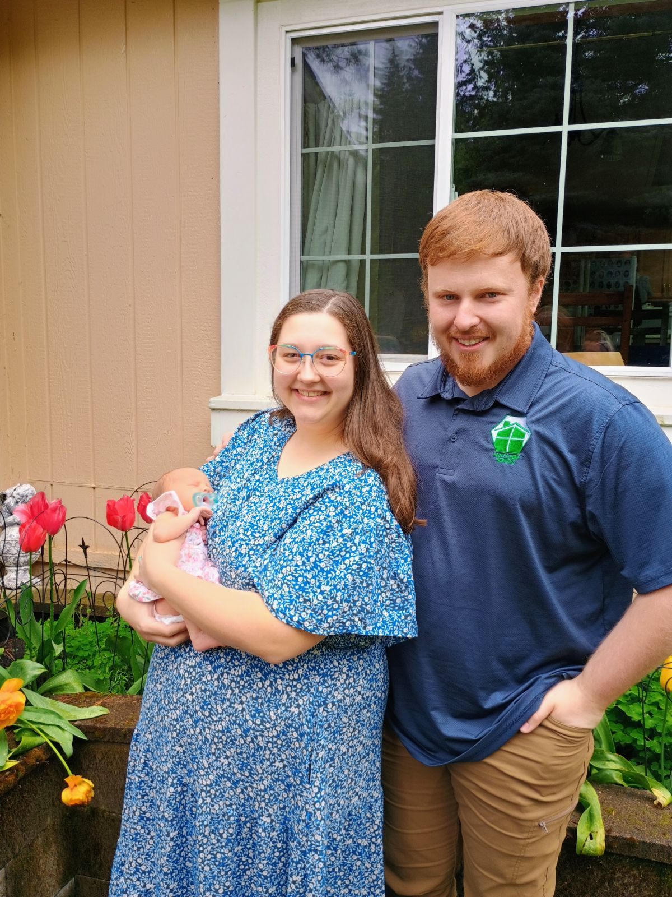

About Me
Greetings, fellow wanderers of the digital realm! I am Conrad, the enigmatic enchanter, weaving tales of whimsy and
wonder with the stroke of my keyboard.In the mystical kingdom of cyberspace, I am known as the elusive wordsmith, conjuring
spells of syntax and semantics to captivate the minds and hearts of those who dare to venture into the realms of my
imagination.
By day, I am a humble librarian of knowledge, delving into the ancient tomes of the internet to uncover hidden treasures
of wisdom and curiosity. By night, I transform into a daring explorer of the unknown, charting uncharted territories of
creativity and innovation.
With a cup of steaming brew in one hand and a quill of infinite possibility in the other, I traverse the vast expanse
of the digital landscape, seeking out new adventures and forging alliances with kindred spirits who share my insatiable
thirst for discovery.
In the enchanted forests of my mind, you'll find me communing with mystical creatures of legend, from wise old dragons
to mischievous sprites, each whispering secrets of forgotten lore and ancient magic.
When I'm not lost in the labyrinth of my own imagination, you might catch me practicing the arcane arts of music
and melody, conjuring harmonies from the depths of my soul with the aid of my trusty guitar and a sprinkle of stardust.
So, dear traveler, if you're brave enough to embark on a quest of epic proportions, join me on a journey through the
realms of fantasy and possibility, where every page is a portal to a world of enchantment and every word is a key to
unlock the mysteries of the universe. Adventure awaits, and the magic is yours to discover!